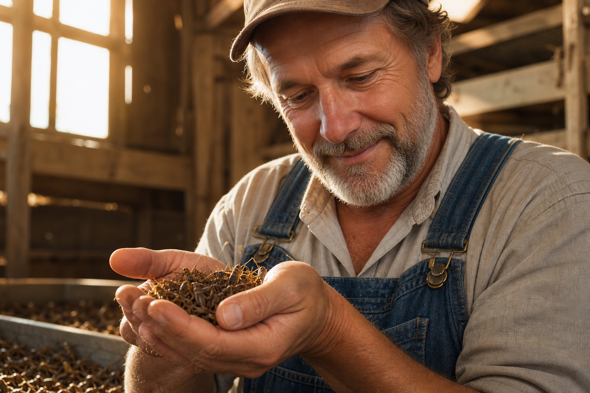
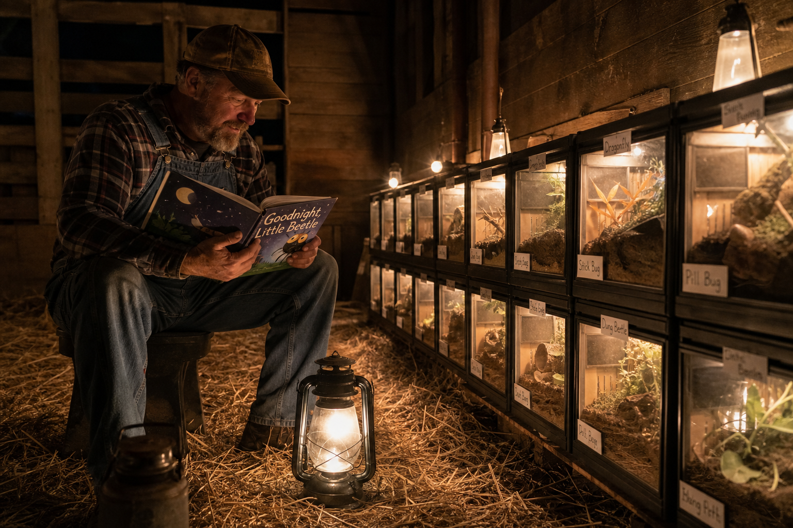
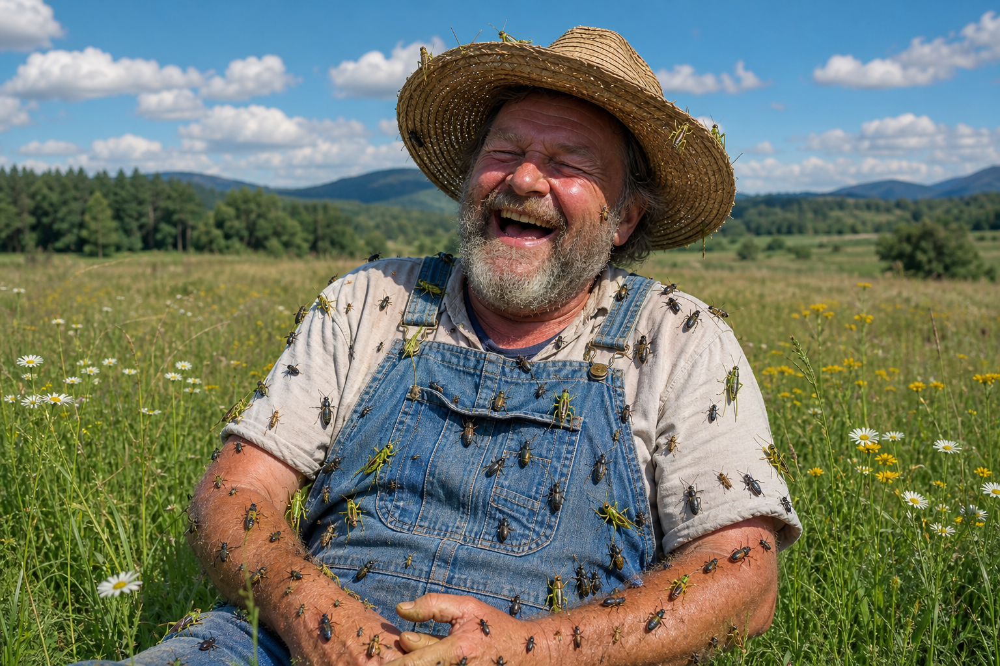

Free range, always
Our crickets roam a full acre of open pasture. The mealworms have a bran field with a view of the mountains. Nobody wears a tag, nobody lives in a bin, and the centipedes get their own gated community because they asked for one.
Every bug is raised on organic grain, fresh produce scraps from the shop, and filtered rainwater. The roaches eat better than most of our staff.

Story time, every night
At 8pm sharp, farmhand Lenny reads to the bugs by lantern light. Right now they're halfway through Charlotte's Web, which we admit was a complicated choice. The crickets chirp at the good parts.
Studies we conducted ourselves, on our own farm, with no supervision, show that bugs who hear a bedtime story are 40 percent creamier. We don't know why. We've stopped asking why.

A dignified life
Every bug on the farm has a name. Yes, all of them. The naming ledger is eleven volumes long and Lenny is behind on volume twelve. Birthdays are observed monthly, in groups, for practical reasons.
Bugs who age out of flavor eligibility retire to the Meadow of Honor, where they live out their days among wildflowers, tiny hammocks, and a koi pond they are advised to avoid. Retirement ceremonies are open to the public on Sundays.
Our promises
Certified cage free
No cages anywhere on the property. The terrariums have doors and the doors have tiny welcome mats.
Classical music in every barn
Mostly cello. The Jerusalem crickets requested more brass and we're in talks.
Therapy on staff
A licensed bug therapist visits weekly. The moths are working through some things about the porch light era.
One gentle chill
When the day comes, our bugs drift off in a cool, calm room while Lenny reads the last chapter. It's very peaceful. He cries every time.